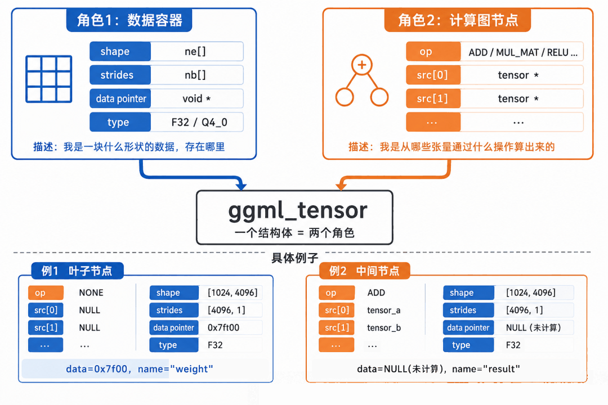
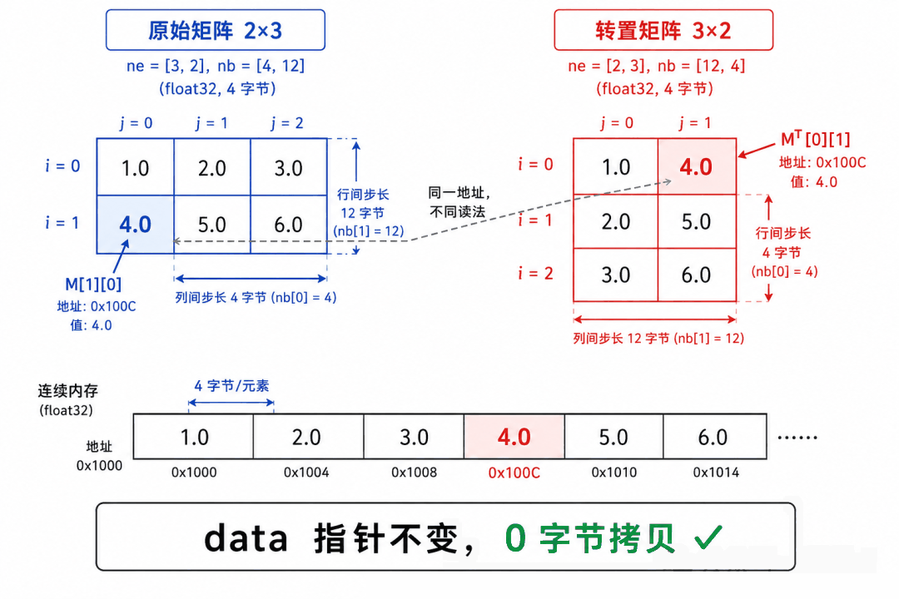
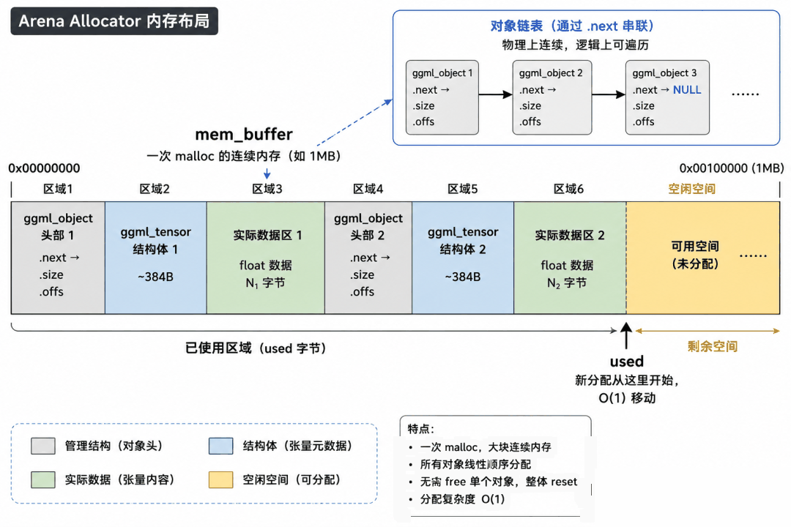
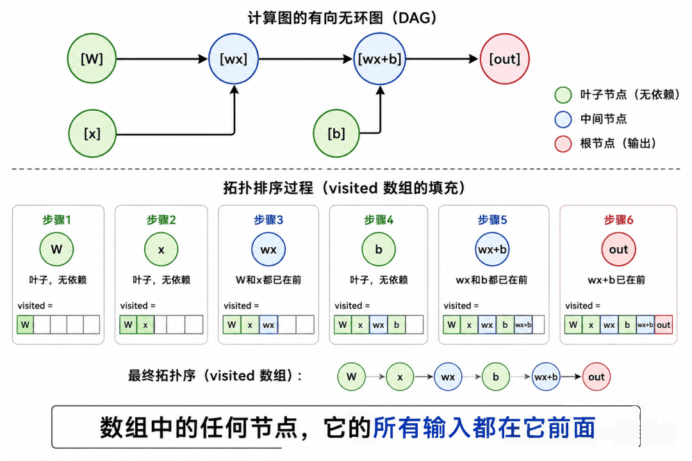
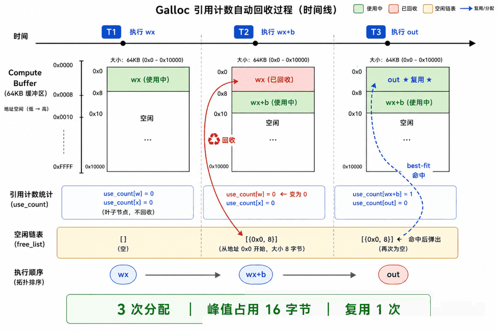

几周前我开始看 llama.cpp 的源码。想看看”为什么我这台本地的笔记本也能跑得动 7B 甚至 14B 模型”，结果发现——这个项目太有意思了。所以我准备尝试写篇系列文章（又开新坑😂）。
从推理引擎开始，如果你也想知道 llama.cpp 的推理引擎 GGML 是怎么设计的，可以看看这篇文章，希望对你有帮助。这是整个系列的第一篇，后面还有 GGUF 格式、130+ 架构支持、推理管线、量化系统、GPU 后端等。
引言：先说清楚这篇文章怎么读
GGML 源码让我感觉：每个设计决策都是被逼出来的。 不是”我觉得这样很酷所以我要这样做”，而是”不这样做就解决不了前面的问题”。
所以这篇文章的写法也很简单：先问”为什么需要这个东西”，再讲”它是怎么实现的”。每一步都标注了真实 GGML 源码中对应的位置——你可以随时打开源码对照着看。
第一章：张量——一切计算的基石
1.1 什么是张量？它解决什么问题？
大模型的计算说穿了就是对一堆多维数组做操作：矩阵乘法、加法、ReLU、归一化…
天真一点的话，你可以为每种数据都单独声明变量——float x[768]、float W[768][768]… 但当模型有 290+ 个这样的数组、每个形状都不同，你还一个一个手写吗？显然不行。
所以 GGML 定义了一个统一数据结构来描述任意形状、任意类型的数据。它叫”张量”（Tensor，就是一个多维数组的统一称呼），定义在 ggml.h:660：
struct ggml_tensor {
enum ggml_type type; // 数据类型：F32? F16? Q4_0（量化格式）? 40+ 种
int64_t ne[GGML_MAX_DIMS]; // ★ 各维度有多少个元素（逻辑形状）
size_t nb[GGML_MAX_DIMS]; // ★ 各维度的字节步长（物理布局）
enum ggml_op op; // 我是哪种运算的结果（叶子节点=NONE）
struct ggml_tensor * src[10]; // ★ 我的输入是哪几个张量
void * data; // 指向实际浮点数的内存
char name[64]; // 调试名字，如 "blk.0.attn_q.weight"
};这个结构体同时扮演两个角色：
- 角色一：数据容器。 type + ne[] + nb[] + data 完整描述了”我是一块什么形状的数据，存在哪”。
- 角色二：计算图节点。 op + src[] 完整描述了”我是从哪些张量通过什么运算产生的”。
“叶子节点”（权重、输入数据）的 op=NONE、src 全是 NULL，说明数据是外部提供的，不需要计算。
为什么这俩字段这么重要？ 因为有了 op 和 src[]，你就不需要手写执行顺序了。你只需要说”我要 a + b”，GGML 自己知道：先确保 a 和 b 都算好了、然后调用加法函数、结果放哪。整个推理引擎的自动编排，全靠这两个字段。
拿 PyTorch 对比一下：你得用 torch.Tensor 存数据，用 torch.autograd.Function 记计算——两套独立系统。GGML 一个结构体全干了。
说实话我第一次看到这个设计的时候，心想”这也太简单了吧”——但越看越觉得这恰恰是最精妙的地方。
1.2 ne 和 nb 的分离——为什么需要两个数组？
说实话，这个设计我第一遍看源码的时候没注意——“不就是 shape 和 stride 吗，PyTorch 也有”。后来才发现，GGML 对这个东西的用法比 PyTorch 激进得多。
ne[]（number of elements） 是逻辑形状：第 0 维有几个元素，第 1 维有几个…
nb[]（number of bytes） 是物理步长：在维度 i 上”走一步”，地址增加多少。
一个 2 行 3 列的 FP32 矩阵（FP32 = 32 位浮点数，每个数占 4 字节，是机器学习中最常用的”全精度”格式）：
物理内存（6 个连续的 float, 共 24 字节）:
地址: 0x1000 0x1004 0x1008 0x100C 0x1010 0x1014
值: 1.0 2.0 3.0 4.0 5.0 6.0
ne[0]=3, ne[1]=2 ← "3列2行"
nb[0]=4 ← sizeof(float) = 4 字节
nb[1]=12 ← nb[0] × ne[0] = 4 × 3访问任意元素 M[第i行][第j列] 的通用公式：
地址 = (char*)data + i × nb[1] + j × nb[0]关键来了——转置矩阵。传统做法是拷贝数据重新排列，但 GGML 只交换 nb：
转置前: ne=[3,2], nb=[4,12] 访问 M[0][1] → 0x1000 + 0×12 + 1×4 = 0x1004 → 2.0
转置后: ne=[2,3], nb=[12,4] ← ne 和 nb 角色互换了！
访问 M^T[1][0] → 0x1000 + 1×4 + 0×12 = 0x1004 → 2.0
↑ 读到的是原矩阵 M[0][1]，恰好就是转置期望的值data 指针没变，物理内存没动，0 字节拷贝。只换了一套 nb，就从同一块内存”读”出了不同的矩阵。
reshape（变形）也是同理。6 个连续的 float，设 ne=[6,1] 是列向量，ne=[2,3] 是 2×3 矩阵，ne=[3,2] 是 3×2 矩阵——只改 ne 和 nb，数据不动。
这就是 GGML 里 reshape、transpose、permute 全部被标记为”空操作”（ggml_op_is_empty 返回 true）、执行时直接跳过的数学基础。

1.3 量化——14GB 模型为什么能跑在 8GB 内存上
说到张量的数据类型，就不得不提量化。这是 llama.cpp 能让大模型塞进小内存的看家本领，也很能体现 GGML 的实用主义哲学——“差不多对就行了，省下的内存是实打实的”。当然这个后面会重点讲讲，但是这里先介绍下。
基本思想：不存每个权重的精确值，而是把一批权重（32 个或 256 个）分到一组，共享一个缩放因子（scale），组内每个权重只存”相对 scale 的位置”。
FP32: 权重 = 0.3741 → 4 字节
Q4_0: 32 个权重共用 1 个 scale
scale = 0.4（用 FP16 存，FP16 = 16 位半精度浮点数，2 字节）
权重_量化值 = round(0.3741/0.4 × 15) = 9 (4 bit)
32 个权重一共: 2 + 32×0.5 = 18 字节
vs 原本 128 字节 → 压缩 7 倍GGML 的量化格式分为三大家族，区别在于块多大和 scale 怎么存：
| 家族 | 块大小 | scale 存储 | 典型 bpw | 代表格式 |
|---|---|---|---|---|
| Q 系列 | 32 个值 | 1 个 FP16 scale | 4.5 | Q4_0, Q4_1, Q8_0 |
| K 系列 | 256 个值 | scale 本身也量化（16 个子块 scale 用 6-bit 存） | 2.5~6.5 | Q2_K, Q3_K, Q4_K, Q5_K, Q6_K |
| IQ 系列 | 256 个值 | 用重要性矩阵指导自适应分配 | 1.5~4.5 | IQ1_S, IQ2_XXS, IQ3_XXS, IQ4_NL |
为什么 K 系列要把 scale 也量化？ Q 系列每 32 个值用 2 字节存 scale——每个值分摊 2/32 = 0.0625 字节元数据开销。K 系列每 256 个值用 12 字节存 16 个量化 scale——每个值分摊 12/256 = 0.047 字节，更省。省出来的 bit 可以给权重本身，或者进一步降低 bpw。
为什么 IQ 系列能用更少的 bit 达到相同质量？ 传统量化对所有权重一视同仁。但现实中有些权重的误差对最终输出影响大（重要），有些影响小。IQ 系列用一个叫 importance matrix 的东西量化”这个权重有多重要”——重要的多给 bit，不重要的少给。所以你看到一个 IQ2_XXS（2.06 bpw）可能和 Q3_K（3.44 bpw）质量差不多。
推理时量化数据怎么用？ 权重以量化格式存在 backend buffer 里（②），推理时每个操作的计算函数先反量化（dequantize）一行到 Scratch Buffer，再做计算。比如 Q4_0 的矩阵乘法：先把 32 个 4-bit 值反量化成 32 个 float（w[i] = scale × quant_value[i]），然后用这些 float 做标准的浮点矩阵乘法。
反量化开销很小，因为 memory-bound 场景下，省下的内存带宽远大于解压的 ALU 开销——这正是量化的精髓：“在内存瓶颈上做节俭，在计算瓶颈上做冗余。”
一个 35B 参数的 MoE 模型（MoE = Mixture of Experts，混合专家——总参数很多但每次推理只激活一小部分），Q4_K_M 量化后约 21 GB。但用 IQ2_M（~2.7 bpw）可以压到约 14 GB。
这就是一个 35B 模型能在你 15 GB 内存 + 12 GB 显存的机器上跑起来的原因——量化 + CPU+GPU 混合推理。

1.4 视图系统——reshape/transpose/permute 怎么做到零拷贝的？
前面讲了 ne/nb 分离可以在数学上实现零拷贝。但 GGML 在工程上是怎么做的？答案是视图系统。
每个 ggml_tensor 有两个字段专门支持视图：
struct ggml_tensor {
// ...
struct ggml_tensor * view_src; // 如果我是视图，指向源张量
size_t view_offs; // 我在源张量中的偏移量（字节）
// ...
};创建视图的流程（ggml_new_tensor_impl, ggml.c:1712）：当你调用 ggml_reshape(ctx, a, new_shape) 时：
// 1. 在 context 中创建新张量壳子（no_alloc 模式，不需要新数据空间）
result = ggml_new_tensor_impl(ctx, a->type, dims, new_ne, a, 0);
// ↑ ↑
// view_src=a view_offs=0
// 2. 修改 ne 和 nb 以适应新形状（数据还是 a 的数据）
result->ne = new_ne;
// nb 按新 ne 重算
// 3. 贴标签
result->op = GGML_OP_RESHAPE;
result->src[0] = a;
// result->data = a->data + 0 ← 和 a 指向同一块内存！对于 transpose、permute、slice（切片），逻辑完全一样，只是 nb 的计算方式不同：
- reshape：改 ne，nb 按新 ne 重新计算
- transpose：交换 ne[0]↔ne[1]，nb[0]↔nb[1]
- permute：重排 ne[] 和 nb[] 的对应关系
- slice：改 ne（取子集），data 地址加 offset
视图链的展平（ggml.c:1723-1727）：如果你对同一个数据连续做多次视图操作（reshape→transpose→slice），会形成一条视图链：数据 → reshape视图 → transpose视图 → slice视图。每次访问数据都要跳三层指针。
GGML 在创建新视图时自动展平这条链：
if (view_src != NULL && view_src->view_src != NULL) {
view_offs += view_src->view_offs; // 累加偏移量
view_src = view_src->view_src; // 跳过中间层，直接指向根部
}这样 slice 视图的 view_src 直接指向原始数据张量，而不是 transpose 视图。不管链有多长，始终只跳一次指针。
为什么这些操作是”空操作”？ ggml_op_is_empty（ggml-impl.h:88）对 RESHAPE、VIEW、TRANSPOSE、PERMUTE 返回 true。在 ggml_graph_compute_thread 中，空操作直接被跳过——不分配 compute buffer，不执行计算函数。因为”计算结果”已经在源张量的 data 里了，只是被换了一套 ne/nb 来读。
这和 Galloc 形成了有趣的对比：Galloc 通过 reuse 减少内存分配次数，而视图系统通过”共享 data 指针”完全不产生分配。两种优化互不冲突——视图只管元数据层的复用，Galloc 管数据层的复用。
第二章：Arena Allocator——批量内存管理
张量有了，但 290 个张量怎么管？总不能用 malloc 申请 290 次吧。这章聊聊 GGML 的”内存池”。
2.1 290 个张量，难道 290 次 malloc？
如果每个 tensor 都单独 malloc：
- 分配慢：malloc 需要查空闲链表、找合适大小的块
- 泄漏风险：忘记 free 一个就是内存泄漏
- Cache 差：数据分散，CPU 缓存命中率低
2.2 方案：一次申请一大块，内部顺序追加
GGML 的做法叫 Arena Allocator：一次 malloc 一大块连续内存，所有张量在里面顺序排列（ggml.c:1557）。
mem_buffer (一次 malloc 1MB):
┌──────────┬──────────────┬──────────┬──────────────┬─────┐
│ 张量 #1 │ 张量1的数据 │ 张量 #2 │ 张量2的数据 │ ... │
│ (结构体) │ (实际float值) │ (结构体) │ (实际float值)│ │
└──────────┴──────────────┴──────────┴──────────────┴─────┘“分配新张量”只需把尾指针后移（O(1)）。”释放”就是整块内存一起 free（O(1)）。不存在碎片、不需要空闲链表。
就像一个大操场——人只会往后站，不留空隙；散场时所有人一起走。

2.3 但真实 GGML 更精妙——对象链表
micro-ggml 的 Arena 只有尾指针移动。但真实 GGML 在每个张量前加了一个 ggml_object 头部，串联成链表（ggml.c:1654）。
为什么需要链表？ 因为后续流程中，需要把 Arena 里所有张量的数据统一迁移到 backend buffer——可能是 GPU 显存，可能是 mmap 映射的文件。
ggml_backend_alloc_ctx_tensors_from_buft（ggml-alloc.c:1237）遍历 context 里所有张量，统一分配 buffer：
第 1 遍：遍历 context，算总数据大小 = 122 MB
第 2 遍：分配 buffer = malloc(122MB) 或 cudaMalloc(122MB)
第 3 遍：逐个 tensor，在 buffer 里线性分配空间
tensor->data = buffer_base + offset
tensor->buffer = buf
第 4 遍：从 GGUF 文件拷贝权重值到 buffer（或用 mmap，不拷贝）设计原则：张量的”身份证”（结构体）和”身体”（权重数据）是分离的——结构体在 CPU 的 Arena 里，数据可能在 GPU 显存里。两者通过 tensor->data 和 tensor->buffer 指针连接。
2.4 mmap（内存映射）——100GB 模型”瞬间”加载
这可能是 GGML 最被低估的性能特性。llama.cpp 默认使用 mmap 来”加载”模型。
传统做法：打开文件 → malloc 一块内存 → fread 把整个文件内容读到内存 → 关闭文件。100GB 文件 = 需要 100GB 物理内存，而且加载过程要等几分钟。
mmap 的做法：告知操作系统”把磁盘上这个文件的第 N 到第 M 字节，映射到我进程地址空间的第 P 到第 Q 个虚拟地址”。操作系统返回”好的，已记录”。数据没有从磁盘读入内存——只是建了一个映射关系。
mmap(GGUF文件, offset, length) 后:
磁盘上的 GGUF 文件: 进程虚拟地址空间:
┌──────────────────┐ ┌──────────────────┐
│ 文件头 │ │ 0x7f0000000000 │
│ KV 元数据 │ ═══映射═══→│ (指向文件头) │
│ ... │ │ 0x7f0000001000 │
│ token_embd 权重 │ ═══映射═══→│ (指向权重数据) │
│ blk.0.attn_q │ │ ... │
│ ... │ │ │
└──────────────────┘ └──────────────────┘程序通过 tensor->data 指针访问权重时，直接读虚拟地址。如果这个地址的对应页面还没加载到物理内存，CPU 触发缺页中断（page fault），操作系统透明地从磁盘读取对应的 4KB 页到物理内存，然后程序继续——完全不知道刚才发生了什么。
关键效果：
- 加载速度：llama_model_load_from_file 几乎瞬间返回。100GB 模型”打开”和 100MB 模型一样快——都是建虚拟地址映射。
- 内存消耗：实际物理内存占用只取决于推理过程中真正访问到的数据。如果某些层的权重在当前推理中没有被用到，它们对应的页面永远不会被加载。
- 多进程共享：如果多个 llama.cpp 进程加载同一个 GGUF 文件，它们共享同一份物理内存页面（操作系统级别的 page cache），不需要各自占用一份。
但 mmap 也有局限：它要求 GGUF 文件在磁盘上的布局和内存访问模式匹配。GGUF 格式（系列第二篇会讲）就是为此设计的——权重按层连续存储，和推理时的访问顺序一致，最大化缺页中断的批量效率。
第三章：延迟执行——GGML 最重要的架构决策
3.1 构建阶段：只贴标签，不计算
当你写 relu(Wx + b) 时：
wx = ggml_mul_mat(ctx, W, x); // ①
wx_b = ggml_add(ctx, wx, b); // ②
out = ggml_relu(ctx, wx_b); // ③每一行都只是”描述”，没有计算。 来看 ggml_add_impl（ggml.c:2004）：
struct ggml_tensor * ggml_add_impl(ctx, a, b, bool inplace) {
result = inplace ? ggml_view_tensor(ctx, a)
: ggml_dup_tensor(ctx, a); // 复制 a 的形状
result->op = GGML_OP_ADD; // ★ 贴标签："我是加法"
result->src[0] = a; // ★ 记下："我从 a 来"
result->src[1] = b; // ★ 记下："我从 b 来"
// result->data = NULL // 没算！
return result;
}ggml_add 不做加法。 它只创建一个新张量壳子，贴上标签，然后返回。
inplace 参数是干什么的？ 如果 inplace=true，result 不是分配新内存，而是复用输入 a 的数据空间。计算结果直接覆盖 a。这适用于”算完加法后 a 的原值已经没用了”的场景——省一次内存分配，也减少 Galloc 压力。不是所有操作都支持 inplace，GGML 只在明确安全时才用。
3.2 执行阶段：遍历图，分发计算
真正计算发生在 ggml_graph_compute_thread（ggml-cpu.c:2962）：
for (node_n = 0; node_n < cgraph->n_nodes; node_n++) {
node = cgraph->nodes[node_n];
if (ggml_op_is_empty(node->op)) continue; // reshape/transpose 跳过
if (!(node->flags & GGML_TENSOR_FLAG_COMPUTE)) continue;
ggml_compute_forward(¶ms, node); // ★ 真正执行！
if (node_n + 1 < cgraph->n_nodes)
ggml_barrier(threadpool); // barrier（关卡）：所有线程必须到达这里，才能继续
}ggml_compute_forward（ggml-cpu.c:1692）是一个巨大的 switch：
switch (node->op) {
case GGML_OP_ADD: ggml_compute_forward_add(params, node); break;
case GGML_OP_MUL_MAT: ggml_compute_forward_mul_mat(params, node); break;
case GGML_OP_ROPE: ggml_compute_forward_rope(params, node); break;
case GGML_OP_FLASH_ATTN_EXT: ggml_compute_forward_flash_attn(...); break;
// ... 100+ 个 case
}每个计算函数从 node->src[]->data 读输入，算结果，写入 node->data。
3.3 为什么延迟执行能带来图复用？
LLM 生成对话时，每吐一个字（token）都要把整个网络跑一遍。但网络结构完全不变，变的只是每一步输入的 token。
如果把”描述”和”执行”混在一起，每吐一个字都要重新描述整个网络（几百次函数调用 × 500 tokens）。
延迟执行让你可以：构建一次，执行 N 次。
在真实 llama.cpp 中，图复用不是”凭感觉”的，而是由 can_reuse()（llama-graph.h:572）做严格的结构等价性检查。只有确认新旧两个 llm_graph_params 在拓扑层面上完全一致，才复用旧图。
检查分为两组：
第一组：ubatch 结构检查——这批 token 的”排列方式”是否和上次一样？
// ubatch 级别
bool can_reuse =
ubatch.n_tokens == other.n_tokens && // token 数相同？
ubatch.n_seqs == other.n_seqs && // 序列数相同？
ubatch.n_seqs_unq == other.n_seqs_unq && // 唯一序列数相同？
ubatch.n_seq_tokens == other.n_seq_tokens && // 每序列 token 数相同？
same_token_or_embd; // 输入类型一致（token vs embedding）n_tokens 是最关键的——它决定了计算图中每个中间张量的 ne[] 最后一维。n_tokens 变成 2，所有的 Q、K、V、attention mask 的形状都翻倍，图结构就不一样了。
第二组：上下文参数检查——推理模式、适配器、采样器是否和上次一样？
// 参数级别
bool can_reuse =
cparams.embeddings == other.embeddings && // 是否提取 embedding（改变输出结构）
cparams.causal_attn == other.causal_attn && // 因果/双向注意力（改变 mask 结构）
arch == other.arch && // 模型架构（不同模型图完全不同）
gtype == other.gtype && // 图类型（编码器 vs 解码器）
cvec == other.cvec && // Control Vector 指针
loras == other.loras && // LoRA 适配器指针（第三章 3.1 讲的 inplace add）
cross == other.cross && // 交叉注意力数据
samplers_equal(samplers, other.samplers); // 采样器配置为什么连指针也要检查？ loras、cvec、cross 都是指针比较（==），不是内容比较。因为 LoRA 适配器改变了图结构——它在每个 ggml_mul_mat 旁边插入了额外的矩阵乘法和加法节点。LoRA 换了 → 图拓扑不同 → 必须重建。
当 can_reuse 返回 false 时，process_ubatch 调用 graph_reserve → 分配新的 graph_ctx（Arena）→ 重新调用 llm_build_xxx 构建 287+ 个节点 → 重新拓扑排序 → 保存到 gf_res_prev 供后续复用。
但如果返回 true，这些全部跳过——十几个内存分配、几百次函数调用、一次拓扑排序，全部省掉。
第四章：计算图与拓扑排序
4.1 通过 src[] 形成有向无环图（DAG）
第三章讲了 ggml_mul_mat、ggml_add、ggml_relu 这些”贴标签”调用。每调用一次，就在 graph_ctx 里创建一个新壳子，并且通过 src[] 指向前面的壳子。
经过三次调用后，内存里有这些张量：
w: op=NONE, src=[], data=权重值 ← 叶子（Arena ①）
x: op=NONE, src=[], data=输入值 ← 叶子
b: op=NONE, src=[], data=偏置值 ← 叶子
wx: op=MUL_MAT, src=[w,x], data=NULL ← 中间（graph_ctx ③）
wx+b: op=ADD, src=[wx,b], data=NULL ← 中间
out: op=RELU, src=[wx+b], data=NULL ← 根src[] 把这些张量连接成了一个有向无环图（DAG）——“有向”因为指针有方向（src 指向前驱），”无环”因为有环就没法执行了。
W ──┐
├──→ wx ──→ wx+b ──→ out
x ──┘ ↗
/
b ─┘图结构的核心约束：你不能先执行 wx+b 再执行 wx——算 wx+b 时 wx 的数据还没出来。需要拓扑排序，把所有节点排成一个”每个节点都在它的输入后面”的序列。
4.2 从根节点出发收集所有祖先
ggml_build_forward_expand 的工作就是：从 out 出发，沿着 src[] 指针向上走，收集所有需要计算的节点，排好序。
具体做法是 DFS（深度优先搜索）：对于每个节点，先递归处理它的所有 src[]，然后再把自己加入列表。这样保证任何节点的输入都在它前面。
4.3 代码实现：mg_visit — DFS + 去重
从最终输出出发，用 DFS 向上追溯。micro-ggml 的 mg_visit 函数体只有 15 行：
static void mg_visit(mg_tensor node, mg_tensor **visited, int n) {
for (int i = 0; i < *n; i++)
if (visited[i] == node) return; // 去重
for (int i = 0; i < 4; i++)
if (node->src[i])
mg_visit(node->src[i], visited, n); // ★ 先递归处理输入
visited[(*n)++] = node; // ★ 最后加自己
}追踪一遍 mg_visit(out, [], 0)：
❶ mg_visit(out) → 处理 src: wx+b
❷ mg_visit(wx+b) → 处理 src: wx, b
❸ mg_visit(wx) → 处理 src: W, x
W: src=[] → visited[0]=W, n=1
x: src=[] → visited[1]=x, n=2
→ visited[2]=wx, n=3
b: src=[] → visited[3]=b, n=4
→ visited[4]=wx+b, n=5
❻ → visited[5]=out, n=6
结果: [W, x, wx, b, wx+b, out]叶子在数组最前面，根在最后面。按此顺序执行，每个节点的输入必定已算好。
真实 GGML 用 hash set 做去重（O(1) 而非 O(n)），逻辑不变。

第五章：Galloc——中间结果的智能回收
前面的 Arena 解决了”结构体放哪”的问题，但中间结果的数据怎么管？每次 decode 有 287 个节点，如果每个都 malloc，不仅慢，而且会出现大量”已经没人用但还没释放”的垃圾占着内存。
Galloc 就是解决这个问题的：一个能分配、能释放、能复用的图级内存管理器。
5.1 问题：不是所有中间结果都需要同时活着
看第三章的 relu(Wx+b) 例子。计算顺序是 W → x → wx → b → wx+b → out。
当算到 wx+b 时，wx 已经没用了——out 只需要 wx+b。但如果不管它，wx 的数据会一直占着内存直到整张图执行完毕。
对于 287 个节点的真实推理，这种”算完就扔”的中间结果占大多数。同时存活的通常只有几十个。
所以理想做法是：算完就回收，后面节点复用这块空间。
5.2 怎么知道”没人需要了”？use_count 引用计数
第一步：构建图时统计。 拓扑排序完成后，遍历所有节点，对每个节点的 src[] 加引用计数：
// 构建图时（ggml_build_forward_expand 内部）
for (int i = 0; i < n_nodes; i++) {
node = cgraph->nodes[i];
for (int s = 0; s < GGML_MAX_SRC; s++) {
if (node->src[s]) {
cgraph->use_counts[hash(node->src[s])]++; // src 多了一个消费者
}
}
}对于 relu(Wx+b)：
W: use_count=1（被 wx 引用）
x: use_count=1（被 wx 引用）
wx: use_count=1（被 wx+b 引用）
b: use_count=1（被 wx+b 引用）
wx+b: use_count=1（被 out 引用）
out: use_count=0（最终输出）第二步：执行时每算完一个节点就检查。 看主循环，每算完一个节点后：
for (节点 N 的每个 src) {
src->use_count--;
if (src->use_count == 0 && src->data != NULL && src != 叶子节点) {
galloc_free(galloc, src->data, size); // ♻ 回收
src->data = NULL;
}
}use_count 从 N 到 0 的那一刻，意味着”所有需要读这个数据的下游节点都已经算完了”——这是释放的精确时刻。
5.3 释放到哪？空闲链表的三种操作
Galloc 的核心数据结构是按地址排序的空闲块链表：
struct free_block {
size_t offset; // 在 compute buffer 中的偏移
size_t size; // 大小（字节）
};
// 空闲块数组，按 offset 升序排列
struct free_block free_list[MAX_BLOCKS];
int n_free;操作一：分配（alloc）——两阶段 Best-Fit
真实 GGML 的 ggml_dyn_tallocr_alloc（ggml-alloc.c:200-260）有两阶段搜索：
阶段 1：在非末尾的空闲块中找 best-fit。 遍历除了最后一个以外的所有空闲块，找”能装下且浪费最少”的块。为什么排除最后一个？最后一个块后面是未分配空间，可以”生长”——留给阶段 2。
for (int c = 0; c < n_chunks; c++) {
for (int i = 0; i < chunk->n_free_blocks - 1; i++) {
if (block->size >= size && block->size <= best_fit_size) {
best = block; // 更新最佳匹配
}
}
}为什么是 Best-Fit？ 小洞刚好补小坑，大洞留给大块。如果选了最大的块，一个大洞被切走一小块后剩余部分还是很大（浪费），而且后续的大 tensor 可能找不到足够大的洞。
命中后：从该块切走 size 字节，剩余部分变小留在空闲列表。如果刚好用完（剩余 0），删除该空闲块。
阶段 2：没找到合适的，尝试用最后一个空闲块。 最后一个块的独特之处是它可以”生长”——因为它后面是未分配内存。这里用 reuse_factor 来量化”浪费程度”：
int64_t reuse_factor = chunk->max_size - block->offset - size;
// reuse_factor < 0：需要扩容
// reuse_factor = 0：完美匹配
// reuse_factor > 0：有多余空间浪费遍历所有 chunk，选 reuse_factor 最优的：优先完美匹配，其次浪费最少。
阶段 3：都不行，开新 chunk。 真实 GGML 支持最多 16 个独立 buffer chunk。新 chunk 的初始大小是 max(size, max_chunk_size)。如果已经用满 16 个配额，最后一个 chunk 可以无限大。
操作二：释放（free）——插入 + 合并
释放时不是简单地追加到空闲列表末尾。因为列表按 offset 排序，需要找到正确的插入位置：
void galloc_free(ptr, size) {
offset = ptr - buffer_base;
// 1. 找到插入位置（保持 offset 升序）
for (int i = 0; i < n_free && free[i].offset < offset; i++);
// 2. 检查能否和前一个块合并
if (i > 0 && free[i-1].offset + free[i-1].size == offset) {
free[i-1].size += size; // 合并！
// 再检查能否和后一个合并
if (i < n_free && offset + size == free[i].offset) {
free[i-1].size += free[i].size;
删除 free[i]; // 三合一
}
return;
}
// 3. 检查能否和后一个合并
if (i < n_free && offset + size == free[i].offset) {
free[i].offset = offset;
free[i].size += size;
return;
}
// 4. 不能合并，插入新块
数组后移，插入 {offset, size} 到位置 i
}相邻合并是反碎片化的关键。 如果连续三个中间结果先后被释放，它们不会变成三个小碎片——而是自动合成一个大块，可以被后续的大 tensor 使用。
5.4 完整追踪——三分三释，峰值 16B
以 relu(Wx+b) 为例，每个中间结果是 2 个 float（8 字节）。初始 Galloc：64KB 全空，n_free = 0。
T1: alloc 8B → 没有空闲块 → 从末尾分配 → wx->data = offset 0
空闲列表: [] (空)
已用: [0, 8) = wx
T2: alloc 8B → 没有空闲块 → 从末尾分配 → wx+b->data = offset 8
空闲列表: []
已用: [0, 8) = wx, [8, 16) = wx+b
节点 wx+b 执行完毕:
wx->use_count: 1 → 0 → ♻ free(offset 0, size 8)
空闲列表: [{0, 8}] ← wx 的 8 字节被回收
已用: [8, 16) = wx+b
T3: alloc 8B → best-fit:
遍历空闲列表[{0, 8}]: 8 >= 8 → 命中！完美匹配！
out->data = offset 0 ★ 复用！
空闲列表: [] (刚好用完了)
已用: [0, 8) = out, [8, 16) = wx+b3 次分配，峰值内存 16 字节（而非 24 字节），1 次复用。对于 287 个节点，这个效果被放大几百倍——compute buffer 通常只需要几十 MB，而不是几百 MB。

5.5 真实 GGML 的 Galloc 还多了什么
micro-ggml 版是单 buffer + 简单空闲链表。真实 GGML（ggml-alloc.c:200-260）多了：
- 多 chunk：每个 GPU 后端有自己的 compute buffer 作为独立 chunk（最多 16 个）
- Chunk 动态增长：最后一个 chunk 的空闲块可以超出 max_size 限制扩容
- 对齐处理：所有分配都对齐到后端的对齐要求（CPU 16B，GPU 128B+）
- Chunk 间最佳匹配：两阶段搜索跨所有 chunk，选全局最优
但核心思想一模一样：引用计数判定”何时回收”，空闲链表管理”回收到哪”，Best-Fit 决定”怎么复用”。
第六章：KV Cache——让生成速度从 O(n²) 降到 O(n)
前面五章讨论了”内存怎么管”和”计算怎么排”。但 LLM 推理还有一个独特的性能瓶颈——Attention 的计算量随序列长度平方增长。KV Cache 就是解决这个问题的。
6.1 问题：每生成一个新 token，都要重新算所有历史 token 的注意力？
回顾 Attention 的计算公式：
Attention(Q, K, V) = softmax(Q × K^T / √d) × V在 autoregressive 生成中，第 1 步只有 token[0]，第 2 步有 token[0,1]，第 3 步有 token[0,1,2]…
如果没有缓存，第 N 步需要计算 N 个 token 的 Q、K、V，然后做 N×N 的注意力矩阵。总计算量是 O(n²)。
但注意一个关键事实：已经生成过的 token，它们的 K 和 V 向量不会改变。 因为 Transformer 是”因果”的——每个 token 只能看到自己和前面的 token，后面发生的事情不影响它。
所以 GGML 的做法是：把每一层已经算过的 K 和 V 缓存起来。下次只需要算新 token 的 K 和 V，然后从缓存读历史的 K 和 V。
6.2 KV Cache 的工作原理
KV Cache 是一个 [n_kv, n_embd_head * n_head_kv] 的大矩阵，每层一个 K 缓存和一个 V 缓存。
第 1 步 (token_0): 算 K₀, V₀ → 写入缓存 [0]
Attention: Q₀ × [K₀] → 结果
第 2 步 (token_1): 算 K₁, V₁ → 写入缓存 [1]
Attention: Q₁ × [K₀, K₁] → 结果
↑ Q₁ 只算一次，K₀ 从缓存读
第 N 步 (token_N): 算 Kₙ, Vₙ → 写入缓存 [N]
Attention: Qₙ × [K₀...Kₙ] → 结果每一步只用算 1 个新 token 的 Q、K、V，然后做 1×N 的注意力。总计算量降到 O(n)。
6.3 内存开销和优化
KV Cache 的内存是巨大的。对于 LLaMA-7B（32 层，32 头，128 维/头，FP16）：
每层 K 缓存: n_ctx × n_head_kv × n_embd_head × 2 bytes
= 4096 × 32 × 128 × 2 = 32 MB
每层 V 缓存: 同样 32 MB
32 层总计: 32 × (32 + 32) = 2 GB这就是为什么长上下文会吃大量内存——KV Cache 是 O(n_ctx) 的。
GGML 对此有多个优化：
- GQA（分组查询注意力）：不是每个 Q 头都有独立的 K、V 头，而是多个 Q 头共享一组 K、V（比如 8 个 Q 头共享 1 组 KV），直接成倍缩小 KV Cache
- 量化 KV Cache：ggml_context_params.type_k 和 type_v 可以把 K、V 也量化（如 Q8_0、Q4_0），进一步压缩
- 滑动窗口（SWA）：只保留最近 W 个 token 的 KV，老的直接丢弃
6.4 KV Cache 和 Galloc 的关系
KV Cache 的内存不在 Galloc 管理的 compute buffer 里。它是独立分配的大块内存（llama_kv_cache_init），生命周期和 llama_context 绑定。
Galloc 管的是”当前这一次 decode 的中间结果”（Q、K、V 的计算结果、Attention 输出、FFN 中间值）。这些用完就回收。
而 KV Cache 是跨 decode 持久化的——这一次 decode 写入的 K、V，下一次 decode 还要读。
第七章：Scratch Buffer——所有节点共享的草稿纸
7.1 Compute Buffer 存”输出”，Scratch 存”过程中”
Galloc 管理的 compute buffer 只存节点的输出。但节点内部需要额外临时空间。
Flash Attention 是什么？ 它是一种优化过的注意力计算方法——不一次性算出整个 Q×K^T 矩阵（太大，放不进 cache），而是把 Q 和 K 切成小块（tile），一块一块地算，算完一块立刻做 softmax，避免把巨大的中间矩阵写到慢速内存。
这里说的”Q 的 tile（256×96）”就是指切出来的一个小块。这些小块是算完就扔的临时数据，正好用 Scratch Buffer 存放。
7.2 为什么能共享？因为图节点是严格串行的（每个节点后都有 barrier）
上一个节点完全结束，下一个才开始。所以 scratch buffer 可以”当前节点用完，下一个直接覆盖”。
ggml_graph_plan（ggml-cpu.c:2737-2960）遍历所有节点，估算每个的 scratch 需求，取最大值：
for (i = 0; i < n_nodes; i++) {
switch (node->op) {
case GGML_OP_FLASH_ATTN_EXT:
prefill = sizeof(float) * (Q_TILE*DK + 2*Q_TILE*KV_TILE + ...) * n_tasks;
decode = sizeof(float) * (heads*chunks*(2+DV) + n_tasks*(DK+2*DV));
cur = MAX(prefill, decode);
break;
case GGML_OP_MUL_MAT: cur = sizeof(float) * n_tasks; break;
case GGML_OP_SOFT_MAX: cur = sizeof(float) * ne0 * n_tasks; break;
// ...
}
work_size = MAX(work_size, cur); // 取最大值！
}
cplan.work_size = work_size + CACHE_LINE_SIZE * n_threads;对于 MiniMind（64M 模型，16 线程），Flash Attention 在 prefill 阶段（预填充：一次性处理用户输入的整个 prompt，通常几百到几千个 token 一起算）的 scratch 约 14 MB。即使图有 287 个节点，scratch buffer 也只需要 14 MB——因为取的是最大值，不是累加。
7.3 完整的 Plan 函数——每种操作需要多少 scratch？
ggml_graph_plan（ggml-cpu.c:2737-2960）遍历图中所有节点，对每种操作估算它需要的临时空间和并行任务数。以下是完整的分类：
不需要 scratch 的操作（直接读写 src→dst，不需要中间缓冲）：
GGML_OP_ADD, GGML_OP_MUL, GGML_OP_RELU, GGML_OP_GELU, GGML_OP_SILU
GGML_OP_RMS_NORM, GGML_OP_SCALE, GGML_OP_SQR, GGML_OP_SQRT
GGML_OP_CLAMP, GGML_OP_STEP, GGML_OP_TANH
→ cur = 0 （不需要临时空间）需要少量 scratch 的操作（每线程一个累加器或临时行缓冲）：
GGML_OP_MUL_MAT: cur = sizeof(float) * n_tasks （每线程一个累加器）
GGML_OP_SOFT_MAX: cur = sizeof(float) * ne0 * n_tasks （每线程一行 exp 和 sum）
GGML_OP_ROPE: cur = sizeof(float) * ne0 * n_tasks （每线程旋转后的行）
GGML_OP_TOP_K: cur = sizeof(int32_t) * ne0 * n_tasks（每线程排序索引）需要大量 scratch 的操作（tile 缓冲 + 累加器）：
GGML_OP_FLASH_ATTN_EXT:
prefill: sizeof(float) * (Q_TILE*DK + 2*Q_TILE*KV_TILE + Q_TILE*DV
+ KV_TILE*DV + KV_TILE*DK) * n_tasks
解释: 每个线程需要 Q tile, K tile, V tile, QK^T 矩阵,
softmax 中间值共 ~229K floats
decode: sizeof(float) * (heads*chunks*(2+DV) + n_tasks*(DK+2*DV))
解释: 每个线程只需要 VKQ 累加器 + 查询缓冲，比 prefill 小得多
cur = MAX(prefill, decode) （取两种情况的最大值）每次类型转换需要临时缓冲的操作：
GGML_OP_CPY, GGML_OP_DUP:
如果涉及量化类型转换（如 Q4_0→F32），需要每线程一行 F32 缓冲
cur = sizeof(F32) * ne0 * n_tasks最终 work_size：
// 对所有节点取最大值
work_size = MAX(work_size, cur);
// 加上各线程的 cache line 对齐间隔
cplan.work_size = work_size + CACHE_LINE_SIZE * n_threads;为什么是取最大值而不是求和？ 因为节点是串行执行的（barrier 保证）。同一时刻只有一个节点在用 scratch buffer，所以只需要够最大的那个用就行。
为什么加 CACHE_LINE_SIZE × n_threads？ 每个线程的 scratch 区域之间需要一个 cache line（通常 64 字节）的间隔，防止”伪共享”——两个线程的变量在同一个 cache line 里，一个线程写会导致另一个线程的 cache line 失效，即使它们逻辑上不共享任何数据。
第八章：七个设计决策，一张图
回到开头那个问题：一台笔记本，怎么跑起 14GB 的模型？
现在你应该能自己回答了：
- 量化（压 7 倍） → 14GB 变 2GB，能装下了
- mmap 懒加载 → 100GB 模型”瞬间”打开，OS 按需加载
- Arena Allocator → 290 个张量结构体一次申请，O(1) 分配
- 延迟执行 + 图复用 → 500 次 decode 只构建一次图
- Galloc + 引用计数 → 中间结果用完就回收，compute buffer 只需几十 MB
- KV Cache → 每步只算 1 个新 token，O(n) 而非 O(n²)
- 长驻线程池 → 微秒级响应，没有 fork/join 开销